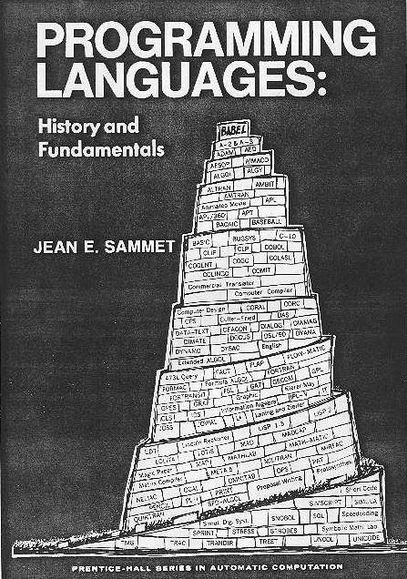
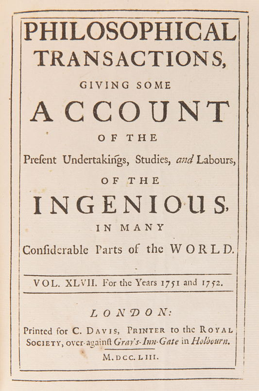
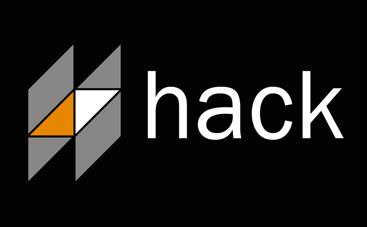
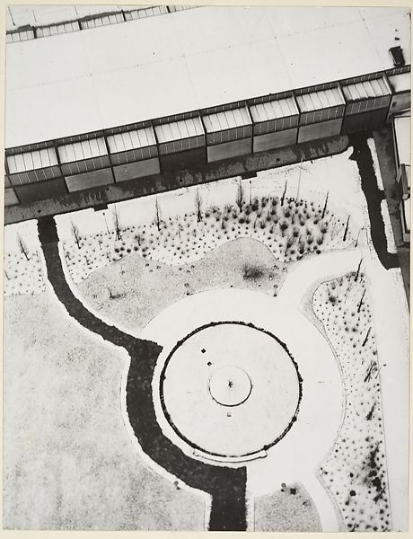
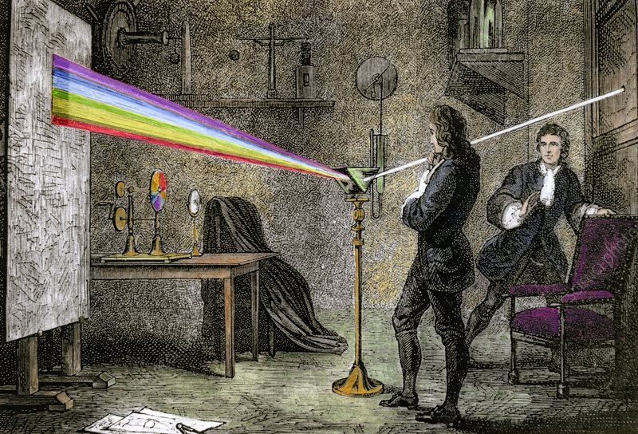
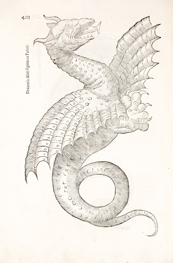

NPRG075
Assignment & How to do
programming language research
Tomáš Petříček, 204 (2nd floor)
petricek@d3s.mff.cuni.cz
https://tomasp.net | @tomaspetricek
Lectures: Tuesday 12:20, S6
https://d3s.mff.cuni.cz/teaching/nprg075

Assignment
Requirements & expectations
Assignment
What the course page says
- Complete a small independent project
- Use one of the methodologies discussed
- Study or design an aspect of system
- Produce a brief report about your work
Scope of the project

Formal quantification
- Course is 3 ECTS credits
- Credit is 20-30 hours of work
- \(75 - (12*1.5 + 10) = 47\)
What does this mean
- About a week of actual work
- Includes all stages of the project
- Idea, research, implementation, write-up
Project
Research and implementation
- Depends on the methodology!
- Writing code, formal models, design patterns
- Analysing past or contemporary systems
- Sketching a new idea for a design
- You cannot write much code in two days!

Programming language?
Anything involved in instructing the computer!
Language, programming environment, runtime system, framework, library, command line tool or AI
Small aspect or a feature!
Writing a report
Communicate your work
- What is the main idea?
- What did you do, learn, conclude?
- Think a brief research paper
Research paper
- Contribute a tiny piece of knowledge!
- Shorter for design, longer for analysis
- From lab report to an essay
- How to write a research paper by SPJ

It is your project
Do something you actually care about
Reuse & overlap is encouraged!
Thesis, other courses, work project, hobby topic, blog post, workshop paper
Programming languages
How to do research?
Programming
Getting research ideas
- Frustration - fix a problem I'm facing!
- Methodology - use a method I like for something
- User-centric - identify what others need
- Analytical - understand something properly
Fix a problem I have
Example problems
-
Client-server programming is hard
Write webs as single F# program? -
Managing large PHP repo is hard
Add types and an efficient VM to PHP?
How to do this
- Use your knowledge expertise!
- "Look I did this cool thing!" is not research claim
- Describe design, formal model, positioning, evaluation

Spiralling abstraction
Web programming is hard
Write a new language!
Creating languages is hard
Define a formal model!
Defining models is hard
Use category theory!
Category theory is hard
Use category theory...?
Use a method I like

Example methods
-
Types for correctness
Check network communication -
Close reading of code
Look at BASIC, UNIX, etc.
How to do this
- Find problem to fit a method
- Reshape problem so that method applies
- May be hard to motivate for new methods
User-centric programming research
Example areas
-
Developer tools
How programmers search? reCode -
Data journalists
Interactive documents language Idyll
How to do this
- Small-scale formative interviews
- Analyse answers & define design goals
- (Implement and evaluate solution.)
Understand something properly
Example problems
-
Modern web frameworks
A formal semantics of React -
Empirical code studies
Large-scale analysis of GitHub
How to do this
- Start by being confused or surprised!
- Formalization, reproduction, comparative analysis
- Result should make the matter clear
Research methods
Ways of looking at programming
Methods: Historical study
-
Evolution of a programming concept
How has a concept changed over time?
Methods: Historical study
-
Evolution of a programming concept
How has a concept changed over time? -
Cultures of programming analysis
Do different communities talk about a thing differently?
Methods: Historical study
-
Evolution of a programming concept
How has a concept changed over time? -
Cultures of programming analysis
Do different communities talk about a thing differently? -
Close look at a past system
In-depth analysis of how something in the past worked
Methods: Design and culture
-
Critical study of interesting source
Close look at a clever hack, famous snippet, etc.
Methods: Design and culture
-
Critical study of interesting source
Close look at a clever hack, famous snippet, etc. -
Design of a pattern language
How to design a specific kind of application or system
Methods: Design and culture
-
Critical study of interesting source
Close look at a clever hack, famous snippet, etc. -
Design of a pattern language
How to design a specific kind of application or system -
Exploring a design metaphor
Programming as architecture, writing, gardening, etc.
Methods: Empirical and formal
-
Empirical analysis of source code
How do different kinds of source code differ?
Methods: Empirical and formal
-
Empirical analysis of source code
How do different kinds of source code differ? -
Small experimental user study
Formative interview or small usability study
Methods: Empirical and formal
-
Empirical analysis of source code
How do different kinds of source code differ? -
Small experimental user study
Formative interview or small usability study -
Formal semantics or a model
Of something confusing, like React state management
Methods: Empirical and formal
-
Empirical analysis of source code
How do different kinds of source code differ? -
Small experimental user study
Formative interview or small usability study -
Formal semantics or a model
Of something confusing, like React state management -
Type system design description
Small but confusing feature like overload resolution
Methods: Heuristic analysis
-
Notation analysis using cognitive dimensions
Comparative analysis of two possible notations
Methods: Heuristic analysis
-
Notation analysis using cognitive dimensions
Comparative analysis of two possible notations -
System analysis using technical dimensions
Evaluation of non-standard programming environment
Methods: Heuristic analysis
-
Notation analysis using cognitive dimensions
Comparative analysis of two possible notations -
System analysis using technical dimensions
Evaluation of non-standard programming environment -
Design or explanation using cognitive model
Programmer misconceptions, design for cognitive fit
Past projects
Inspiration and ideas
Past projects
Quantitative coding style analysis
- Empirical analysis
- Style of different kinds of Python
Evolution of CLOS system
- History of the LISP object model
Patterns in Package Managers
- Pattern language for designing package managers.
Conclusions
Final tips
Reading

How to write a research paper
- By Simon Peyton-Jones
- tinyurl.com/nprg075-paper (PDF)
Why should you read this?
- Report is like a mini-paper
- Not all advice applies, but...
- Good hints on writing, structure, etc.